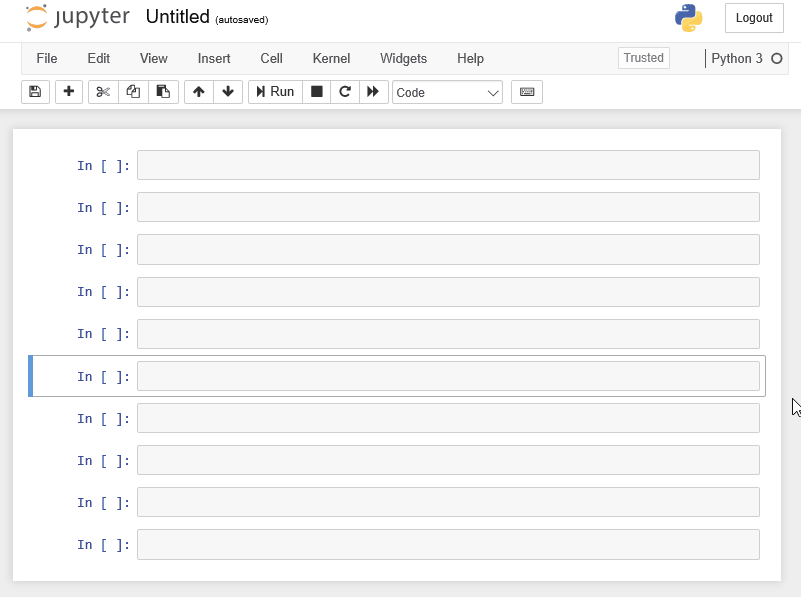
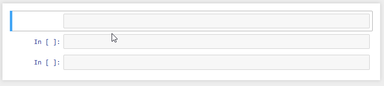
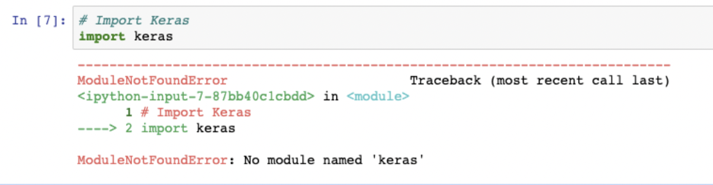

journey
title Your Analytics Learning Journey
section Statistical Thinking
Understanding distributions: 5
Learning hypothesis testing: 4
Interpreting confidence intervals: 4
section SQL
Designing schemas: 5
Writing joins: 5
Building aggregations: 4
section Python (Now)
Automating workflows: 3
Handling larger data: 3
Designing reproducible analysis: 3
Python Session 01: Programming for Data Analysts
Why Programming for Data Analysts?
Python
Intro
Introduction
The Strategic Shift: From Tool User to Workflow Designer
Up to this point in the bootcamp, you have learned how to:
- Think statistically
- Structure data properly
- Query databases efficiently
You already understand data.
Now we move from analyzing data to analyzing the data with controlling data workflows.
Programming is not about replacing SQL or Excel.
It is about extending your analytical power beyond manual interaction.
Your Journey So Far
You are upgrading your analytical capabilities.
Why Programming is Necessary
The fundamental reason is leverage.
Excelallows you to operate on data manually.SQLallows you to …
Python allows you to:
- Automate repetitive tasks
- Scale to larger datasets
- Ensure reproducibility
- Reduce dependency on licensed tools
- Increase speed and efficiency
Important
Programming transforms you from an operator into a system designer.
Automation: Eliminating Repetition
Consider a simple scenario:
- Every month you receive a CSV/Excel file.
- Every month you clean it manually.
- Every month you need to
INSERT INTOthe Database
\[\Downarrow\]
Every month you repeat the same steps.
Instead, you write the logic once.
import pandas as pd
df = pd.read_csv("monthly_sales.csv")
df = df[df["price"] > 0]
df["revenue"] = df["price"] * df["quantity"]
df.to_csv("cleaned_sales.csv", index=False)
df.to_sql('sql_reference_folder')
Tip
Now the computer performs the task consistently and automatically.
Scale: Beyond Excel Limits
Excel maximum row capacity: 1,048,576 rows.
Modern systems generate millions of records daily.
Python, especially when integrated with databases, handles large-scale datasets efficiently.
flowchart LR
A[Small Dataset] --> B[Excel Works]
C[Large Dataset] --> D[Excel Slows]
D --> E[Python + Database]
Caution
Large-scale analytics requires programmatic control.
Reproducibility: Making Analysis Transparent
Excel operations can disappear when formulas are overwritten.
In Python, every transformation is documented as code.
import pandas as pd
df = pd.read_csv("sales.csv")
df = df[df["price"] > 0]
df["revenue"] = df["price"] * df["quantity"]
df.head()If someone reads your script, they can reproduce every step.
Important
This is critical in professional analytics environments.
Cost Efficiency
Traditional statistical/analytical tools require expensive licenses.
- SPSS
- SAS
- Stata
- Excel
- Tableau
- Power BI
Python:
- Open-source
- Free
- Community-supported
- Flexible (no restrictions)
This reduces organizational cost and increases accessibility.
Tip
Newly established and/or small companies they prefer to use Python, for data analytics and/or in analtyics workflows because of above mentioned reeasons
Speed and Performance
When datasets grow, Excel becomes slower.
Python processes filtering and transformations faster, especially when vectorized operations are used.
Example:
Code
import pandas as pd
import numpy as np
data = np.random.randint(1, 100, size=1_000_000)
df = pd.DataFrame({"value": data})
filtered = df[df["value"] > 50]
print(f'the shape of the main data: {df.shape}')
print(f'the shape of the filtered data: {filtered.shape}')
filtered.head()the shape of the main data: (1000000, 1)
the shape of the filtered data: (494767, 1)| value | |
|---|---|
| 0 | 90 |
| 1 | 60 |
| 4 | 58 |
| 5 | 97 |
| 7 | 74 |
This demonstrates processing of one million observations programmatically.
First Interaction with Python
Before advanced analysis, let’s try to understand execution flow.
Python runs instructions sequentially.
Code
print("Hello, Data Analysts")Hello, Data AnalystsCode
a = 10
b = 5
result = a + b
print(result)15This is the foundation of all automation.
From SQL Logic to Python Logic
You already understand SQL filtering:
SELECT *
FROM sales
WHERE price > 0;Equivalent logic in Python:
import pandas as pd
df = pd.read_csv("sales.csv")
filtered = df[df["price"] > 0]
filtered.head()The logic is familiar \(\rightarrow\) The interface changes.
Example: Removing Duplicates
In Excel: Data \(\rightarrow\) Remove Duplicates
In SQL:
SELECT
DISTINCT
*
FROM your_table;In Python:
import pandas as pd
df = pd.DataFrame({
"name": ["Alice", "Bob", "Bob", "Charlie"],
"sales": [100, 200, 200, 300]
})
duplicates = df.duplicated()
duplicatesdf_clean = df.drop_duplicates()
df_clean
ImportantThe Difference
The result is identical.
The advantage is control and reusability.
Conceptual Evolution
journey
title From Manual Analysis to Automated Analytics
section Manual Tools
Clicking menus: 5
Repeating steps: 4
Risk of inconsistency: 3
section Programming
Writing logic once: 5
Automating workflows: 5
Ensuring reproducibility: 5
Importantefficiency and scalability
- This is not about complexity.
- It is about efficiency and scalability.
SQL vs Python
At this stage, it is important to clearly position SQL and Python in the analytics stack.
Note
They are not competitors \(\rightarrow\) They serve different purposes.
High-Level Comparison
| Dimension | SQL | Python |
|---|---|---|
| Primary Purpose | Query structured data | Control, transform, automate workflows |
| Environment | Database engine | Programming environment |
| Data Location | Data stays inside database | Data can be local, database, API, files |
| Best For | Filtering, joining, aggregating | Automation, modeling, pipelines |
| Execution Model | Declarative (what you want) | Imperative (how to do it) |
| Reproducibility | Stored queries | Full scripts and pipelines |
| Scalability | Excellent inside DB | Excellent with libraries & distributed systems |
| Machine Learning | Limited | Extensive ecosystem (scikit-learn, etc.) |
| Visualization | Basic | Advanced (matplotlib, seaborn, plotly) |
| Automation | Limited | Strong |
Mental Model Difference
SQL is declarative.
You describe the desired result:
SELECT *
FROM sales
WHERE price > 0;Python is imperative.
You describe the step-by-step logic:
import pandas as pd
df = pd.read_csv("sales.csv")
df = df[df["price"] > 0]
df.head()Conceptual Workflow
flowchart LR
A[Raw Data in Database] --> B[SQL: Extract & Aggregate]
B --> C[Python: Transform & Automate]
C --> D[Modeling & Visualization]
SQL answers: What data do I need?
Python answers: What should happen next?
Complementary Roles
Think of SQL and Python as two layers:
| Layer | Responsibility |
|---|---|
| Database Layer | Efficient data retrieval |
| Programming Layer | Analysis, automation, modeling |
\[\Downarrow\]
A professional data analyst uses both.
Practical Example: Same Goal, Different Roles
Goal: Calculate revenue per customer.
SQL
SELECT customer_id,
SUM(price * quantity) AS revenue
FROM sales
GROUP BY customer_id;Python (After Data Extraction)
import pandas as pd
df = pd.read_csv("sales.csv")
df["revenue"] = df["price"] * df["quantity"]
revenue_per_customer = df.groupby("customer_id")["revenue"].sum()
revenue_per_customer.head()Summary
SQL is optimized for:
- Structured data
- Large-scale querying
- Efficient joins
- Database performance
Python is optimized for:
- Automation
- Complex transformations
- Modeling
- Reproducibility
- End-to-end pipelines
A modern data analyst must be fluent in both.
Welcome to Notebook
Important.ipynb alert
New file type alert! .ipynb
A .ipynb file is the standard file format used by Jupyter Notebooks, which is an interactive computational notebook environment.
The extension stands for Interactive PYthon Notebooks
.ipynb \(\rightarrow\) Interactive PYthon Notebooks
Jupyter is unique in that it runs directly in your browser. Upon opening Jupyter, a new page should open in your browser revealing a simple file structure like the one below:
Opening notebooks in your normal file manager won’t work. You can only load them from within the Jupyter dashboard.
- Jupyter Notebook
- Jupyter Lab
- Vscode Notebook
- Google Colabe
- and many more…
Since, we are comfortable with the VScode, we will continue working with Python using the same environment. Moreover, in the end we are going to build Streamlit Dashboard, which assumes working with the .py files. VScode is one of the best open source IDE in the world, thus our decision to stick with the VScode could be considered as a data-driven:) .
Organizing a Project Folder
Before moving on, let’s take a moment to consider effective ways of organizing your Python projects (and why an organized method would be beneficial to your project work!). Following a strict method of organization for your files and scripts is essential when working with Python.
Important
It is for every programming language and not only!
As a professional analyst, you’ll often be working on a number of different projects at the same time. This means large numbers of data sets, scripts, and folders. If your file system is a mess, it becomes easy to lose track of where things are, leading to stress, frustration, and lost time. You’ll also find it much harder to reuse code from past projects—an essential part of the job given how many times you have to conduct similar tasks on different data sets. Without a system in place, you may never be able to find that particular script you’re looking for, leading to more wasted time rewriting it from scratch.
Perhaps even more importantly, messy project folders won’t help you make any friends in your colleagues and project stakeholders. If you can’t find anything in your mess of a project, they certainly won’t be able to either, making collaboration a vexing affair. Collaboration is a big part of data analysis, especially when working for a larger organization. Knowing where your project documents live and how they’re named will make your life, and your collaborators’ lives, that much easier.
Start with:
data_analytics_with_python/
│
├── data/
│ ├── raw/
│ └── processed/
│
├── notebooks/
│
├── imgs/
│
├── docs/
│
├── requirements.txt
│
├── .gitignore
│
└── README.mdCreating Cells
To create cells, you have to be in navigating mode.
Switch to navigating mode now, then press:
- A key
four timesto create four new cells above your selected cell. - B key on your keyboard
five timesto create five cells below your selected cell.
Note
Note that each time you create a new cell, it immediately becomes the selected cell. Once finished, your screen should look something like this:

Deleting
The process for deleting cells is very similar to the process for creating cells. Simply ensure you’ve highlighted the cell you want to delete, then press the D key twice.

Creating Markdown Fields/Cells
With the top cell in your notebook selected, press M on your keyboard. The cell will instantly change in appearance such as losing the In [ ] : brackets on the left. What this does is tell Notebook that whatever’s in this cell isn’t code that’s supposed to be executed.

Python Packages
Before we begin serious analytical work in Python, we must understand how Python is extended.
Python by itself is a general-purpose language.
To perform data analytics efficiently, we use additional tools called packages and libraries.
What Is a Package?
A package is a collection of Python modules organized in a directory structure.
In practical terms:
- A package adds new functionality to Python
- It can be installed and reused across projects
- It may depend on other packages
Example:
pandas is a package for data manipulation and analysis.
What Is a Library?
A library is a broader term.
- It is a collection of packages and modules
- It provides functionality for a specific domain
For example:
The Python Data Science ecosystem includes a library stack:
- pandas
- numpy
- matplotlib
- scikit-learn
These together form a data analytics library ecosystem.
In practice, the terms package and library are often used interchangeably.
Why Packages Matter
Without packages, Python is limited.
With packages, Python becomes:
- A data manipulation engine
- A visualization platform
- A machine learning environment
- An automation framework
Installing Packages
Since you have installed Miniconda, you can install packages using:
conda installpip install
For this course, we will use pip inside our Conda environment.
Installing pandas
Open your terminal inside your activated Conda environment.
Run:
pip install pandasAfter installation completes successfully, we verify it.
Verifying Installation
Open VSCode Notebook.
Create a new notebook file.
Run the following:
import pandas as pdCheck the installed version:
Code
pd.__version__'2.3.3'If the version number appears, the installation is successful.
Bellow message indicates that the package is not isntalled.

Important: Reproducibility with Requirements File
Later in the course, we will not install packages manually.
Instead, we will use a file called: requirements.txt
This file lists all required packages and versions.
Example:
pandas==2.2.2
numpy==1.26.4
matplotlib==3.8.4To install all packages at once:
pip install -r requirements.txtThis ensures:
- Reproducibility
- Environment conssistency
- Easier collaboration
Data Types
Every programming language works with data. In Python, every value has a type.
Understanding data types is fundamental because:
- Operations depend on type
- Comparisons depend on type
- Functions behave differently based on type
In analytics, incorrect data types often cause incorrect results.
Integer
An integer represents numeric data without a decimal point.
Examples:
1, 2, 3, -10, 0
Code
x = 10
y = -3Code
x10Code
print(type(x))<class 'int'>Integers are typically used for:
- Counts
- IDs
- Discrete quantities
Floating-Point Number
A floating-point number represents numeric data with a decimal point.
Examples:
1.34, 4.567, 10.4, -2.5
Code
a = 3.14
b = 10.0Code
a3.14Code
print(type(a))<class 'float'>Floats are typically used for:
- Continuous measurements
- Financial values
- Statistical calculations
String
A string represents textual data.
Strings are written inside single or double quotes.
Examples:
“Hello”, “Data”, “Analytics”
Code
name = "Alice"
city = 'Yerevan'Code
name'Alice'Code
print(type(name))<class 'str'>Strings are typically used for:
- Names
- Categories
- Labels
- Text descriptions
Boolean
A Boolean represents truth values.
It has only two possible values:
True and False
Code
is_active = True
is_complete = FalseCode
is_activeTrueCode
print(type(is_active))<class 'bool'>Booleans often result from comparisons.
Code
x = 10
x > 5TrueBooleans are typically used for:
- Logical conditions
- Filtering data
- Decision making in code
Variables
A variable is a named reference to a value stored in memory.
In simple terms:
A variable allows us to store data and reuse it later.
Instead of repeatedly writing the same value, we assign it a name.
Why Variables Are Important
Variables allow us to:
- Store intermediate results
- Reuse computed values
- Make code readable
- Avoid repetition
- Build logical workflows
Without variables, automation is impossible.
Creating a Variable
In Python, a variable is created using the assignment operator =.
Code
x = 10Here:
xis the variable name
10is the value
=means “assign the value to the variable”
Now Python remembers that x refers to 10.
Code
x10Variables Can Store Any Data Type
Integer
Code
count = 100
count100Float
Code
price = 19.99
price19.99String
Code
customer_name = "Alice"
customer_name'Alice'Boolean
Code
is_active = True
is_activeTrueCode
type(price)float
Important
In Python a variable does not have a fixed type.
Its type depends on the value assigned to it.
Reassigning Variables
Variables can be updated.
Code
x = 5
x5Code
x = 20
x20The variable name stays the same, while, the stored value changes.
Variables in Computations
Variables are used to build logic.
Code
price = 100
quantity = 3
revenue = price * quantity
revenue300Here:
pricestores 100
quantitystores 3
revenuestores the result of multiplication
This is the foundation of data analysis workflows.
Variable Naming Rules
Variable names:
- Must start with a letter or underscore
- Cannot start with a number
- Cannot contain spaces
- Are case-sensitive
Valid examples:
Code
total_sales = 500
customer_id = 101
average_price = 19.5Invalid examples:
# 1value = 10 # cannot start with a number
# total sales = 50 # cannot contain spacesVariables as Memory Labels
Think of a variable as a labeled container.
flowchart LR
A[Variable Name] --> B[Stored Value in Memory]
B --> C[Used in Computation]
The name allows us to access the stored value whenever needed.
Tip
Variables are the building blocks of programming.